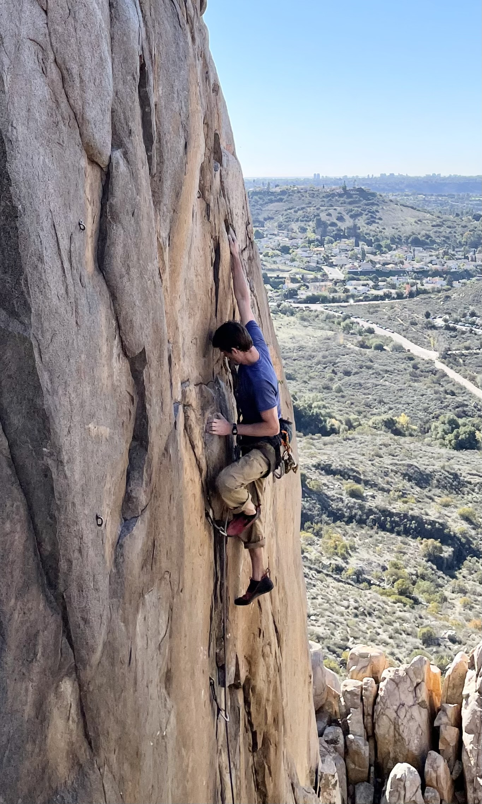

Code
Education
Research positions
Experience
Awards
Journal Papers
Conference Proceedings
Thesis
Presentations
Ph.D. Candidate from San Diego State University and University of California, Irvine, currently at Lawrence Livermore National Laboratory
I use scientific computing to study the structure and properties of atomic nuclei. I have worked on a number of different topics in nuclear structure and reaction theory, quantum chemistry, quantum information theory, and machine learning. All of my work involves the application of high performance computing (HPC) to quantum many-body physics.
My (ongoing) Ph.D. project is on the integrated shell model and Hauser-Feshbach description of beta-delayed neutron emission.
Last updated February 2023.
Languages
Wigner [Code]
A library of functions for computation of Wigner 3-j, 6-j and 9-j
symbols, written in modern Fortran.
dmscatter [Code]
A fast Fortran code for WIMP-nucleus form factors and differential event
rate spectra. Written in modern Fortran with an optional Python
interface. Parallel execution with OpenMP.
PANASH [Not released]
Proton and neutron approximate shell model code. Not yet released.
COMMCAS [Not released]
Computational Model Monte Carlo Sampler. Not yet released.
PhD Computational Science, expected 2023 - Joint Doctoral Program with UC Irvine and San Diego State University
MS Physics, 2018 - San Diego State University
BA Physics, 2016 - University of California, Berkeley
Proton-neutron entanglement in the nuclear shell
model
C. Johnson and O. Gorton
Published in J. Phys.
G.: Nucl. Part. Phys. 50 045110
Pre-print: arXiv:2210.14338
dmscatter: A Fast Program for WIMP-Nucleus
Scattering
O. Gorton, C. Johnson, C. Jiao, J. Nikoleyczik
Published in J. of
Comp. Phys. Comm. Vol. 284, 108597, March 2023
Pre-print: arXiv:2209.09187
Cross sections for neutron-induced reactions from surrogate
data: revisiting the Weisskopf-Ewing approximation for (n,n’) and (n,2n)
reactions
O. Gorton and J. E. Escher
Submitted to [Physical Review C]
Pre-print: arXiv:2102.03452
Measurements of proton capture in the A=100-110 mass region:
Constraints of the 111In(gamma,p)/(gamma,n) branching point relevant to
the gamma-process
O. Olivas-Gomez, A. Simon, O. Gorton, J. E. Escher et al.
Published in Phys.
Rev. C, Vol. 102, 055806, Nov. 2020
A Problem in the Statistical Description of Beta-Delayed
Neutron Emission
O. Gorton, C. Johnson, and J. Escher
Submitted to proceedings of 15th International Conference on Nuclear
Data for Science and Technology (ND2022). Preprint: arXiv:2210.05904
Improving nuclear data evaluations with predictive reaction
theory and indirect measurements
J. Escher, K. Bergstrom, E. Chimanski, O. Gorton, E. J. In, M. Kruse, S.
Peru, C. Pruitt, R. Rahman, E. Shinkle, A. Thapa, W. Younes
Submitted to proceedings of 15th International Conference on Nuclear
Data for Science and Technology (ND2022).
Neutron capture cross sections from surrogate reaction data
and theory: connecting the pieces with a Markov-Chain Monte Carlo
approach
O. Gorton and J. E. Escher
Published in Spring Proceedings
in Physics, Vol. 254, 229-231, Sep. 2020. Preprint: arXiv:1905:03055
Efficient Modeling of Nuclei Through Coupling of Proton and
Neutron Wavefunctions
O. Gorton, Advisor: C. Johnson
Masters
Thesis (2018) San Diego State University, 2018
Nuclear Shell Model to the Rescue: Efforts to Resolve a
Mystery in Beta Delayed Neutron Emission
O. Gorton, C. Johnson, J. Escher
Talk at APS Division of Nuclear Physics Fall 2022 Meeting ( New Orleans,
October 2022)
PDF
Crisis in Beta-Delayed Neutron Emission: Shell Model to the
Rescue
O. Gorton, C. Johnson, J. Escher
Talk at Nuclear Data Conference (July 2022).
PDF
Proton and Neutron Approximate Shell Model:
Factorization-based Importance Truncation
O. Gorton, C. Johnson, J. Escher
Poster at Nuclear Structure Conference (June 2022)
PDF
DMFortFactor: A Fast and Accessible for Computing
WIMP-Nucleus-Scattering Event-Rates
O. Gorton, C. Johnson, C. Jiao
Talk at DNP21 APS Conference (October 2021)
PDF
Better MCMC for Nuclear Data using emcee and
B-DJINN
O. C. Gorton, J. E. Escher, K. O. Bergstrom, M. K. Kruse
Talk given at LLNL Summer Slam 2021
PDF
Nuclear Physics for WIMPs
O. Gorton and C. W. Johnson
Talk at SDSU SIAM Student Chapter Summer Colloquium Series, Friday July
2, 2021
PDF
Cross subsections for neutron reactions from surrogate
measurements: Revisiting the Weisskopf-Ewing
approximation
O. Gorton and J. E. Escher
Talk at DNP20 APS Conference (October 2020)
PDF
Can we get rid of the theorists?
O. Gorton and J. E. Escher
Talk at LLNL Summer Slam (August 2020)
PDF
Big Picture and Background for Nuclear-Electronic Orbital
(NEO) Approach: Calculating Mixed Nucleon-Electron Wave
Functions
O. Gorton
Seminar for the Furche Group, Chemistry Department, UC Irvine (March
2020)
PDF
Indirect measurements of nuclear cross subsections: tempering
experimental results with theory
O. Gorton and J. E. Escher
Seminar for HEDP Exit Talk (September 2019)
PDF
Sensitivity Study of the Surrogate Method
O. Gorton and J. E. Escher
Poster at LLNL Student Poster Symposium (August 2019)
PDF
Temperature and Entropy in the Nuclear Shell
Model
O. Gorton and C. W. Johnson
Poster at SDSU ACCESS event (April 2019)
PDF
Proton Neutron Interacting Shell Model: Order of Magnitude
Reduction for Medium Mass Nuclei
O. Gorton and C. Johnson
Poster at SDSU annual research symposium (March 2019)
PDF
Neutron capture cross subsections from surrogate reaction
data and theory: connecting the pieces with a Markov-Chain Monte Carlo
approach
O. Gorton and J. E. Escher
Poster at Compound Nuclear Reactions conference CNR18, September 2018
PDF
A Markov Chain Monte Carlo Tool for Hauser-Feshbach
Codes
O. Gorton and J.E. Escher
Seminar for HEDP Exit Talk (August 2018)
PDF
In my free time I enjoy rock climbing.
